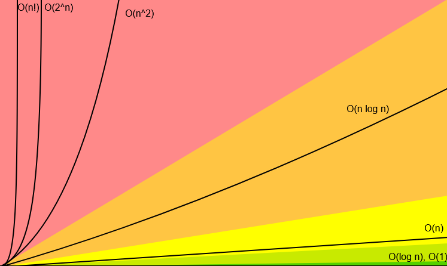

Teoria grafów w informatyce algorytmicznej
Spis treści
- Informacje wstępne
- Złożoność obliczeniowa

- Problemy NP-x
- Reprezentacja grafu:
- Lista krawędzi
- Lista sąsiedztwa
- Macierz sąsiedztwa
Algorytmy i Problemy:
- Problem kojarzenia małżeństw
- Problem komiwojażera
- Problem znajdywania najkrótszej ścieżki
- BFS i DFS
Złożoność obliczeniowa algorytmu
Wraz z pojęciem złożoności obliczeniowej dochodzi nam pojęcie skalowalności algorytmu/programu.
Znaczy to tyle, że podczas pisania jakiegoś fragmentu kodu musimy zastanowić się w jaki sposób go piszemy, parę razy przemyśleć czy to co napisałem nie zajmuję za dużo pamięci, lub za dużo czasu, oraz czy nadaje się do przetworzenia dużej ilości danych.
Wracając do złożoności, określamy ją notacją tak zwanego dużego \(O\) (ang. Big O notaton)
Kiedy mówimy o dużym \(O\) mamy na myśli to, jak dobrze nasz algorytm działa lub jak bardzo spowalnia przez wprowadzenie przez nas coraz większą i większą ilość danych.
Jest bardzo ciężko omówić cały koncept dużego \(O\) mając do dyspozycji nie za dużo czasu, tak aby nie przysłonić głównej tematyki poruszanej na tej stronie, dlatego będzie po krótce
operacje
elementy
Powyżej znajduję się tabelka, jak liczba elementów wpływa na ilość danych operacji, najlepiej będzie zobaczyć na przykładzie, więc załóżmy, że nasza funkcja musi przerobić \(100\) elementów, jaka będzie ilość operacji z wykorzystaniem każdej złożoności?
- \(O(1)\) stała (od jednej do paru operacji)
- \(O(\text{log}n)\) logarytmiczna (\(7\) operacji)
- \(O(n)\) liniowa (\(100\) operacji)
- \(O(n\text{log}n)\) logarytmiczno-liniowa (\(700\) operacji)
- \(O(n^2)\) kwadratowa (\(10 000\) operacji)
- \(O(n^3)\) sześcienna (\(1 000 000\) operacji)
- \(O(2^n)\) wykładnicza (\(1.267 * 10^{30}\) operacji)
- \(O(n!)\) silnia (\(~9,332 621 544 · 10^{157}\) operacji)
Podczas przeglądania tej podstrony możesz natrafić na przeróżne złożoności np. \(O(|V| + |E|)\) lub \(O(|V|)\) patrząc na to możemy czuć się skołowani, lecz ta druga jest równoważna z \(O(n)\) zastąpiłem \(|V|\) inną zmienną aby pokazać zależność. W taki sam sposób zamieniłem pierwszy przykład lecz z dwoma zmiennymi.
Klasa problemów NP
Klasy złożoności typu NP są sposobem na określenie złożoności i trudności w rozwiązywaniu lub samego istnienia rozwiązania danego problemu.
Same pojęcia są dość prostę do przetworzenia, jednak gdy chcielibyśmy przestudiować ich istotę i bardziej je prześwietlić byłaby to bardzo długa sekcja obejmująca m.in maszynę Turinga, która już sama w sobie jest dość skomplikowana.
- Problem P (ang. polynomial time) - problem decyzyjny dla którego rozwiązanie możemy znaleźć (i również zweryfikować poprawność) w czasie wielomianowym.
- Problem NP (ang. nondeterministic polynomial time) - nazywamy tak problem decyzyjny dla którego poprawność danego algorytmu jesteśmy w stanie sprawdzić w wielomianowej złożoności czasowej.
- Dla znalezienia rozwiązania wymagany jest algorytm o złożoności co najmniej wielomianowej
- Problem NP-zupełny (ang. NP-complete) - problem decyzyjny który należy do klasy NP oraz spełnia zależność: jeżeli znaleźlibyśmy rozwiązanie danego problemu NP-zupełnego w czasie wielomianowym to bylibyśmy w stanie rozwiązać każdy problem NP również w czasie wielomianowym.
- Problem NP-trudny (ang. NP-hard) - problem obliczeniowy dla którego rozwiązanie nie jest możliwe w czasie wielomianowym, i jest tożsame z rozwiązaniem wszystkich problemów klasy NP.
Na koniec sekcji zostawiam małą ciekawostkę. Zależność pomiędzy Problemami P a NP jest jedną z najsłynniejszych zagadek matematycznych, aż tak, że udowodnienie iż \(P = NP\) lub \(P \neq NP\) jest nagradzane milionem dolarów z racji, że właśnie to zagadnienie jest tematyką jednego z siedmiu Problemów Milenijnych
Reprezentacja grafu
Istnieje kilka sposobów reprezentowania grafów, każde z nich ma swoje wady i zalety, tutaj przedstawię trzy z nich. Każdą z nich opisze za pomocą paru kryteriów biorąc pod uwagę kwestie pamięciowe i obliczeniowe:
- Zajęta ilość pamięci
- Dodanie krawędzi
- Dodanie wierzchołka
- Usunięcie krawędzi
- Usunięcie wierzchołka
- Sprawdzenie sąsiedztwa dwóch wierzchołków (czy są połączone krawędzią)
Pierwszym i najprostszym sposobem reprezentacji grafu będzie:
Lista krawędzi
W tym sposobie każda krawędź grafu jest przedstawiana jako para wierzchołków, które są nią połączone. Cały graf jest zatem reprezentowany jako lista takich par.
Na przykład rozważmy graf skierowany(ten sam graf będzie w każdym przykładzie reprezentacji aby pokazać wady, zalety oraz podobieństwa, różnice każdego sposobu):
- \((A, B)\)
- \((B, C)\)
- \((B, D)\)
- \((C, A)\)
- \((D, A)\)
W kwestii wydajności pamięciowej i obliczeniowej sposób ten wygląda następująco:
- Zajęta ilość pamięci: \(O(∣E∣)\).
- Dodanie krawędzi: \(O(1)\)
- Dodanie wierzchołka: nie jest możliwe pobranie wierzchołka nieposiadającego żadnej krawędzi
- Usunięcie krawędzi: \(O(∣E∣)\).
- Usunięcie wierzchołka: \(O(∣E∣)\) - wymagane przejście przez wszystkie krawędzie w celu znalezienia danego wierzchołka
- Sprawdzenie sąsiedztwa: \(O(∣E∣)\)
Ciekawostka - do stworzenia grafów na tej stronie właśnie użyłem tego sposobu, i gorąco go polecam pod kątem prostoty w użyciu
Lista sąsiedztwa
Jest to jeden z fundamentalnych sposobów przedstawiania grafu. Najprościej powiemy że jest to połączenie macierzy i listy krawędzi w którym dla każdego wierzchołka przechowywana jest lista jego sąsiadów.
- \(A ---> [B] \)
- \(B ---> [C, D]\)
- \(C ---> [A]\)
- \(D ---> [A]\)
W kwestii wydajności pamięciowej i obliczeniowej sposób ten wygląda następująco:
- Zajęta ilość pamięci: \(O(|V|+|E|)\).
- Dodanie krawędzi: \(O(1)\)
- Dodanie wierzchołka: \(O(1)\)
- Usunięcie krawędzi: \(O(∣E∣)\).
- Usunięcie wierzchołka: \(O(∣V∣)\)
- Sprawdzenie sąsiedztwa: \(O(∣V∣)\)
Macierz sąsiedztwa
Macierz - Układ liczb zapisany w postaci prostokątnej tablicy której rozmiar będzie zależał od grafu jaki będziemy badać  \(|V| * |V|\)
\(|V| * |V|\)
Macierzą sąsiedztwa grafu nazywamy macierz kwadratową \(A\) w której przedstawiamy liczbę krawędzi łączących poszczególne wierzchołki.
Rozpatrzmy taką sytuację - mamy graf skierowany i chcemy przedstawić za pomocą macierzy sąsiedztwa, jakie są kolejne kroki?
- Wybieramy jeden dowolny wierzchołek, oznaczamy go jako pierwszy i patrzymy czy łączy się z następnymi. W naszym przypadku będzie to wierzchołek \(A\)
- Wierzchołek pierwszy z samym sobą się nie łączy więc dajemy 0 (żeby dać tutaj 1 musiałaby być w nim pętla)
- Wierzchołek pierwszy z drugim się łączy więc obok 0 dajemy 1
- Wierzchołek pierwszy z trzecim się nie łączy więc obok 1 dajemy 0
- I finalnie wierzchołek pierwszy z czwartym nie łączy się również, więc obok 0 dajemy znów 0
- Gdy skończymy porównywać pierwszy wierzchołek z kolejnymi powtarzamy czynność przechodząc na kolejny wierzchołek, w tym przypadku \(B\) dopóki nie skończą nam się możliwe wierzchołki
\[ A = \begin{bmatrix} 0 & 1 & 0 & 0 \\ 0 & 0 & 1 & 1 \\ 1 & 0 & 0 & 0 \\ 1 & 0 & 0 & 0 \\ \end{bmatrix} \]
W kwestii wydajności pamięciowej i obliczeniowej sposób ten wygląda następująco:
- Zajęta ilość pamięci: \(O(|V|^2)\).
- Dodanie krawędzi: \(O(1)\)
- Dodanie wierzchołka: \(O(V)^2\)
- Usunięcie krawędzi: \(O(1)\).
- Usunięcie wierzchołka: \(O(|V|^2)\)
- Sprawdzenie sąsiedztwa: \(O(1)\)
Algorytmy i problemy
Płynnie po reprezentacji i informacjach wstępnych przechodzimy do algorytmów grafowych
Problem komiwojażera
Jest to zagadnienie polegające na optymalizacji drogi pod względem odległości, ceny lub czasu podróży. Problem mówi o sprzedawcy który podróżuje od miasta do miasta, wyrusza ze swojej miejscowości rodzinnej, na swojej handlowej drodze przechodzi przez każde miasto dokładnie jeden raz, zależy mu na tym aby droga którą pójdzie była najkrótszą możliwą. Na koniec wędrówki wraca do miasta rodzinnego.
Eksplorując ten problem będziemy chcieli znaleźć odpowiedź na pytanie: Jaka jest najkrótsza droga która przechodzi przez każde miasto i wraca do punktu wyjścia.
Tłumacząc wstęp na język matematyki: miasta to wierzchołki, a szlak po którym wędruje sprzedawca to krawędzie z wagami. Jak na początku wspomniałem, drogę możemy zoptymalizować pod wieloma względami, za to będa odpowiedzialne wagi.
Finalnie... Czyli?
Jak znaleźć minimalny cykl Hamiltona w pełnym(jest to podejście najbardziej pesymistyczne, lecz nie zawsze takie jest) grafie ważonym.
Problem podróży sprzedawców po miastach był już rozważany w pierwszej połowie XIX w. przez Williama Rowana Hamilltona jednak wtedy problem nie zawierał żadnych matematycznych uzasadnień. Problem szczegółowo został opisany dopiero w 1930r. przez austriackiego matematyka Karla Mengera. Zdawał on sobie wtedy również sprawę ze złożoności tego problemu
Karl Menger
William Rowan Hamillton
Zagadnienie należy do typu problemów NP-trudnych czyli - nie istnieje dla niego rozwiązanie ze złożonością wielomianową i niestety nie istnieje dla niego ogólny i efektywny algorytm dający optymalne rozwiązanie.
Jednakże mamy jeszczę wersję decyzyjną tego problemu, wtedy mamy daną liczbę \(x\) i graf, musimy odpowiedzieć na pytanie czy istnieje trasa komiwojażera czyli cykl krótszy od \(x\), wtedy ten problem jest już NP-zupełny
By zrozumieć z czym tak na prawdę się mierzymy, wprowadźmy wzór określający liczbę kombinacji w zależności od liczby \(n\) czyli miast.
\(Ilosc\) \(kombinacji = {{(n-1)!} \over 2}\)
Dla 20 miast liczba cykli hamilltona wynosi
\({{(20-1)!} \over 2} = {19! \over 2} = 6 * 10^{16}\)
Co by nie mówić jest to dość duża liczba
Sposoby rozwiązywania problemu komiwojażera
- Algorytm Helda-Karpa
- Algorytm najbliższego sąsiada:
- Algorytm mrówkowy
- Symulowane wyżarzanie
- Algorytm Christofidesa
Problem znajdywania najkrótszej ścieżki
Zagadnienie polega na znalezieniu w grafie ważonym ścieżki łączącej dane wierzchołki o najmniejszej sumie wag.
Problem możemy podzielić na dwa szczególne przypadki:
- Wyznaczenie najkrótszej ścieżki między dwoma dowolnymi wierzchołkami \(v_1\) i \(v_2\), wtedy w najgorszym przypadku konieczne jest wyznaczenie najkrótszych ścieżek od \(v_1\) do wszystkich wierzchołków w grafie. W tym przypadku graf możemy sobie zobrazować jako miasto, \(v_1\) jako nasz dom, a \(v_2\) jako np. sklep spożywczy. Wierzchołek jest skrzyżowaniem, a krawędź zwykłą ulicą której długość uzależniona jest od wagi. Mamy mało paliwa i musimy tam dojechać jak najkrótszą ścieżką.
- Do rozwiązania tego zagadnienia wykorzystamy takie algorymty:
- Algorytm Dijkstry o złożoności czasowej \(O(|V|^2)\) czyli \(O(n^2)\)
- Algorytm Bellmana-Forda o złożoności czasowej \(O(|V|^3)\) czyli \(O(n^3)\)
- Wyznaczanie najkrótszej ścieżki pomiędzy każdą parą wierzchołków w grafie. Do znalezienia jej istnieje możliwość zmodyfikowania powyższych w taki sposób, aby za każdym razem przyjmowały inny wierzchołek, lub wykorzystanie konkretnych, już do tego przystosowanych
- Takich jak:
- Algorytm Floyda-Warshalla o złożoności czasowej \(O(|V|^3)\)
- Algorytm Johnsona o monstrualnie wyglądającej złożoności czasowej \(O(|V|^2 \text{log}|V| + |V||E|)\), po zastosowaniu zmiennych wygląda nieco lepiej - \(O(n^2 \text{log}n + ne)\)
BFS
Jest to jeden z dwóch powszechnie używanych algorytmów przeszukiwania grafu. Poprzez słowo przeszukiwanie będziemy rozumieli jako usystematyzowaną w jakiś sposób czynność która będzie polegała na odwiedzeniu wszystkich wierzchołków grafu.
Algorytm realizuję pojęcie kolejki FIFO (ang. First In First Out) - struktury danych w której dane są dodawane zawsze na koniec a pobierane z początku.
Mając taki graf jak by wyglądało krok po kroku przeszukanie i kolejka FIFO?
- Zaczniemy od wierzchołka \(A\) \( Q = \begin{bmatrix} A \end{bmatrix} \)
- Patrzymy które wierzchołki są z nim połączone i dodajemy je do kolejki. \( Q = \begin{bmatrix} A & B & E & I \end{bmatrix} \)
- Cała operacja będzie się opierać na porównaniu następnych wierzchołków z iloma i czy w ogóle są połączone, jeśli są dodajemy je do kolejki. Porównaliśmy już wierzchołek \(A\) no to zostawiamy go i jedziemy dalej. \( Q = \begin{bmatrix} B & E & I \end{bmatrix} \)
- Następny w kolejce do inspekcji jest wierzchołek \(B\), czy z czymś się łączy?
- Patrząc po obrazku widzimy połączenie pomiędzy nim a wierzchołkami \(C\) oraz \(D\), więc robimy to co powyżej \( Q = \begin{bmatrix} B & E & I & C & D \end{bmatrix} \)
- I znowu, przechodzimy na następny w kolejce wierzchołek czyli \(E\) usuwając \(B\) i dodajemy wierzchołki połączone z nim, ale co ważne tylko te które nie są już w kolecje \( Q = \begin{bmatrix} E & I & C & D & F & G & H \end{bmatrix} \)
- Bez zawahania usuwamy wierzchołek \(E\) i dodajemy jedyne połączenie czyli \(J\) \( Q = \begin{bmatrix} I & C & D & F & G & H & J \end{bmatrix} \)
Pozostało jeszcze parę ruchów ale dalsze czynności są analogiczne
Złożoność
Pod względem złożoności czasowej ten algorytm nie wypada najgorzej bo ma on ją na poziomie \(O(|V| + |E|)\)
DFS
Jest to drugi powszechnie używany algorytm przeszukiwania grafu.
Pierwszy sposób przeszukiwania realizował pojęcie kolejki FIFO a ten sposób realizuję pojęcie stosu LIFO (ang. Last In First Out). Znaczy to tyle, że jak wkładamy element \(n\) na stos \( \begin{bmatrix} x \\ y \\ z \end{bmatrix} \) to jedynym elementem jaki będziemy mogli ściągnąć ze stosu to jest właśnie \(n\), gdyby to była kolejka to moglibyśmy wyłącznie zdjąć pierwszy element, w tym przypadku byłby to \(z\). Zdjęcie \(n\) ze stosu  \( \begin{bmatrix} n \\ x \\ y \\ z \end{bmatrix} \)
\( \begin{bmatrix} n \\ x \\ y \\ z \end{bmatrix} \)  \( \begin{bmatrix} x \\ y \\ z \end{bmatrix} \)
\( \begin{bmatrix} x \\ y \\ z \end{bmatrix} \)
Mamy dany taki graf, jak będą wyglądały kolejne kroki przeszukania DFS i stos LIFO?
- Zaczynamy od wierzchołka \(A\), dodajemy go do listy wierzchołków odwiedzonych, a na stos dodajemy wierzchołki które łączą się z nim krawędzią
- \( Stos = \begin{bmatrix} B \\ C \\ D \end{bmatrix}\)
- \(Odwiedzone = \begin{bmatrix} A \end{bmatrix}\)
- Następnym krokiem będzie pójście do pierwszego wierzchołka na stosie. Pierwszym jest \(B\) więc: usuwamy go ze stosu i dodamy do listy wierzchołków odwiedzonych. Sytuacja się prezentuję w sposób następujący:
- \( Stos = \begin{bmatrix} C \\ D \end{bmatrix}\)
- \(Odwiedzone = \begin{bmatrix} A & B \end{bmatrix}\)
- Teraz znów pójdziemy do pierwszego wierzchołka na stosie. Pierwszym jest \(C\) więc: usuwamy go ze stosu i dodamy do listy wierzchołków odwiedzonych. Na grafie będzie wyglądało to tak, że po prostu cofniemy się do \(A\) i pójdziemy przez krawędź do \(C\). Po przejściu zauważamy iż wierzchołek \(C\) łączy się również z \(E\) więc dodajemy go na stos.
- \( Stos = \begin{bmatrix} D \end{bmatrix}\) \( Stos = \begin{bmatrix} E \\ D \end{bmatrix}\)
- \(Odwiedzone = \begin{bmatrix} A & B & C \end{bmatrix}\)
- Teraz pierwszy na stosie jest \(E\), więc do niego zmierzamy. Po dotarciu dodajemy go do listy wierzchołków odwiedzonych.
- \( Stos = \begin{bmatrix} D \end{bmatrix}\)
- \(Odwiedzone = \begin{bmatrix} A & B & C & E \end{bmatrix}\)
- No i został nam ostatni na stosie, nie pozostaje nic innego jak się tam wybrać. Droga do niego nie jest prosta bo musimy się cofnąć do \(C\) i dopiero wtedy do \(D\). Takim sposobem opróźniamy stos i wypełniamy listę wierzchołków odwiedzonych. Tak wygląda gotowy DFS
- \( Stos = \begin{bmatrix} \end{bmatrix}\)
- \(Odwiedzone = \begin{bmatrix} A & B & C & E & D \end{bmatrix}\)
Złożoność
Pod względem złożoności czasowej ten algorytm wypada jak jego kolega z branży - BFS czyli \(O(|V| + |E|)\)
Kojarzenie małżeństw
Twierdzenie to przypisywane jest Phillipowi Hallowi, który sformułował je w 1935r.
Problem polega na tym, że mamy: \(n\) panien i \(n\) kawalerów których chcemy dobrać w pary małżeńskie
Warunkiem koniecznym oraz wystarczającym aby istniało takie skojarzenie jest to że dla dowolnej grupy chłopców \(k ∈ \{1, 2, . . . , n\}\) oni wspólnie znają co najmniej \(k\) dziewczyn
Philip Hall - brytyjski matematyk
Problem będziemy rozwiązywali na życiowym przykładzie takim jaki przedstawiłem poyżej czyli:
Mamy 5 panien:
- Anna - 0
- Beata - 1
- Celina - 2
- Dorota - 3
- Ewa - 4
I 5 kawalerów
- Fryderyk - 5
- Grzegorz - 6
- Henryk - 7
- Igor - 8
- Jan - 9
Używając listy sąsiedztwa wytłumaczonej w sekcji reprezentacji przedstawię teraz wygląd grafu
- Anna ----> Henryk, Igor
- Beata ----> Fryderyk, Grzegorz, Igor
- Celina ----> Fryderyk
- Dorota ----> Grzegorz, Igor, Jan
- Ewa ----> Henryk, Igor
- \(0 --> 7,8\)
- \(1 --> 5,6,8\)
- \(2 --> 5\)
- \(3 --> 6,8,9\)
- \(4 --> 7,8\)
Na podstawie tej listy tworzymy graf dwudzielny
Pierwszym naszym krokiem będzie połączenie pierwszej panny (Anny) z pierwszym akceptowanym przez nią kawalerem (Henrykiem), i tak naprawdę ten krok będzie naszą podstawą którą wykonujemy do momentu napotkania problemu
Następnie bierzemy kolejną pannę (Beatę) i łączymy ją z akceptowanym przez nią kawalerem (Fryderykiem)
Gdy spróbujemy połaczyć Celinę z Fryderykiem, okaże się, że jest on już zajęty. Lecz nic straconego, Beata lubi również Grzegorza i Igora. Więc jak się okazuję, istnieje dla Celiny szansa. W tym celu zastosujemy ścieżkę naprzemienną - a jest to taka która w grafie dwudzielnym przebiega naprzemian przez krawędzie skojarzone i nieskojarzone. Ścieżkę rozpoczynamy zawsze od krawędzi nieskojarzonej
Ścieżka (czerwona linia, i zielona do Beaty) idzię od Celiny do Grzegorza przez Fryderyka oraz Beatę. Krawędzie czerwone są wolne, a zielone skojarzone
Ścieżkę naprzemienną gdzie występują krawędzie wolne nazywamy ścieżką rozszerzającą, ponieważ za ich pomocą będziemy mogli rozszerzyć graf o kolejne skojarzenia. Aby to zrobić usuwamy krawędzie skojarzone w ścieżce rozszerzającej, a krawędzie wolne czynimy krawędziami skojarzonymi. W ten sposób Celina została zeswatana z Fryderykiem który wcześniej był już zajęty.
Wracamy do naszego początkowego algorytmu, patrzymy na następną pannę - Dorotę, i widzimiy że lubi Igora który wciąż jest wolny, więc bez problemów łączymy ich ze sobą
Pozostała jedynie para Ewa -> Igor, jednak Igor ma już swoją drugą połówkę i jest nią Dorota. Szukamy i tworzymy więc ścieżkę rozszerzającą od Ewy do Jana.
Ścieżka przebiega przez Igora oraz Dorotę. Teraz musimy tylko zamienić krawędzie wolne na skojarzone i skojarzone na wolne